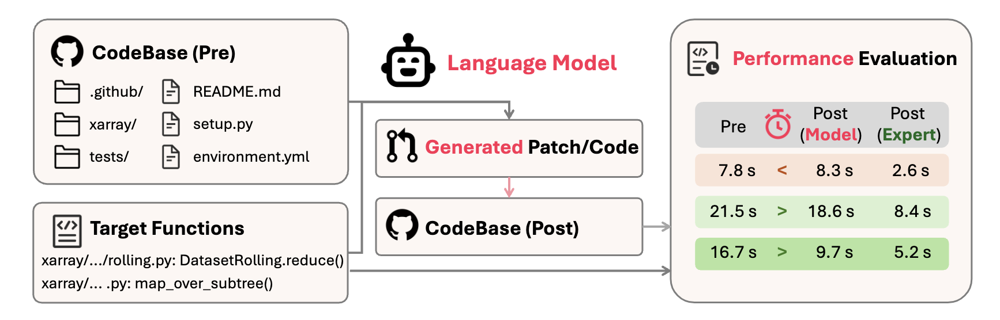
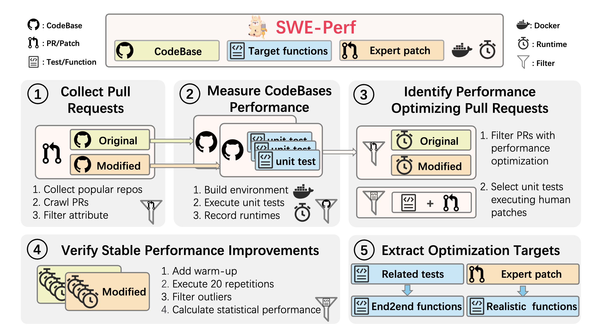
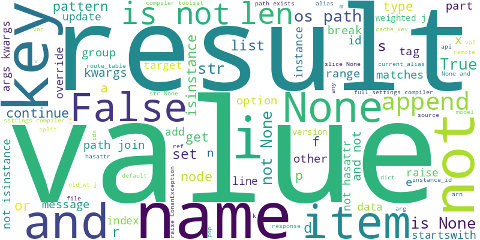
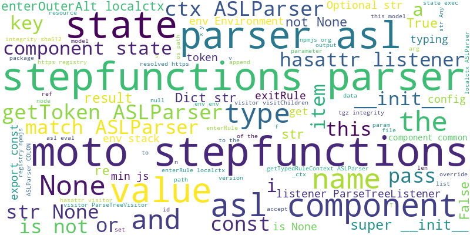

Optimizing code performance is paramount in software engineering, yet it remains a largely unexplored frontier for Large Language Models (LLMs). While models excel at fixing bugs, their ability to make code faster at a repository-scale is not well understood.

Figure 1. Language models take a codebase and target functions as input and generate code patches aimed at reducing runtime on relevant test cases.
To address this, we introduce SWE-Perf, the first benchmark meticulously designed to evaluate LLMs on performance optimization tasks within genuine, complex repository contexts. Unlike benchmarks that focus on isolated code snippets, SWE-Perf challenges models to understand and modify entire codebases. The benchmark comprises 140 instances, each derived from a real performance-improving pull request on a popular GitHub repository, which are filtered from 100K pull requests. For each instance, a model is provided with the full source code, the target functions, and the human expert's solution for reference. The core task is to generate a code patch that reduces the test's execution time without introducing bugs.
The data collection pipeline of our SWE-Perf benchmark consists of a rigorous 5-step process designed to identify and validate real-world performance optimization tasks from popular open-source repositories.

Figure 2. The data collection pipeline of our SWE-Perf benchmark.
Starting from over 102,241 pull requests across nine Python repositories, our pipeline filters down to 140 high-quality instances that represent genuine performance optimization challenges. Each instance includes the complete repository context, performance-sensitive test cases, and verified human expert solutions, ensuring that our benchmark reflects real-world software optimization scenarios. The selection pipeline consists of: (1) collecting pull requests from popular repositories, (2) measuring performance of original and modified codebases using unit tests, (3) identifying performance-optimizing pull requests, (4) verifying stable performance improvements through statistical testing, and (5) extracting optimization targets for both oracle and realistic settings.
Our evaluation of top models (Claude 3.7, OpenAI o3, DeepSeek and Qwen) and agentic frameworks (Agentless, OpenHands) reveals that AI currently lacks the high-level reasoning of human experts.

Performance Gain: 2.26%
Strategy: Micro-optimizations. Focuses on low-level, local changes like `append`, `get`, and `set`.

Performance Gain: 10.85%
Strategy: Macro-optimizations. Performs high-level architectural changes involving components like `parser`, `state`, and `listener`.
Performance Gap: AI must learn architectural thinking.
SWE-Perf introduces a challenging new frontier for LLMs: real-world code performance optimization. Our findings highlight a significant gap between current AI capabilities and human expertise, primarily due to a lack of architectural reasoning in models. By open-sourcing our benchmark, we aim to spur research that closes this gap and pushes models toward generating truly production-ready, performant code.
@article{he2025sweperf,
title={SWE-Perf: Can Language Models Optimize Code Performance on Real-World Repositories?},
author={He, Xinyi and Liu, Qian and Du, Mingzhe and Yan, Lin and Fan, Zhijie and Huang, Yiming and Yuan, Zejian and Ma, Zejun},
year={2025}
}